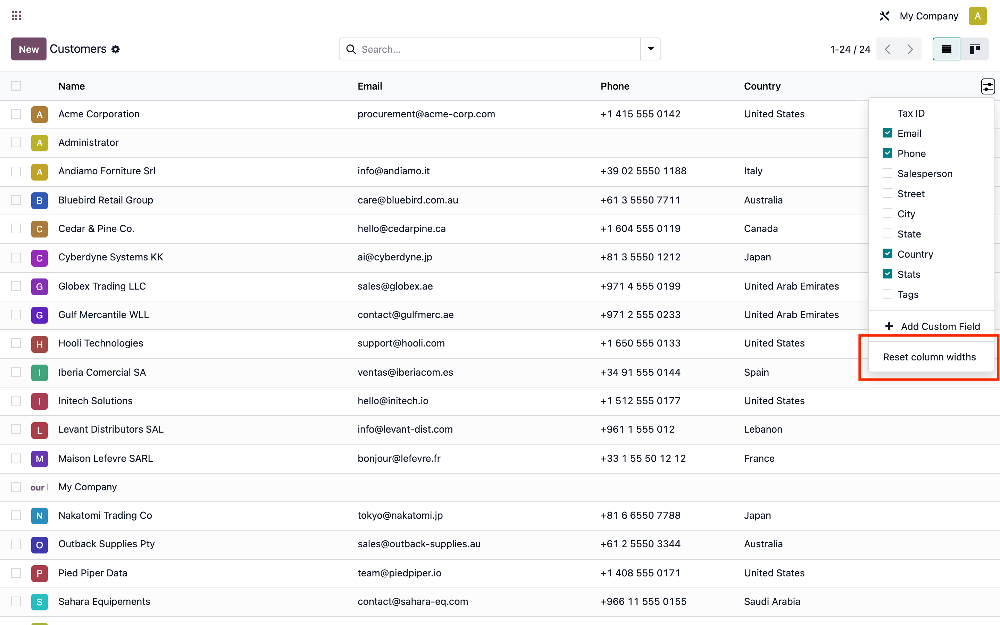

Resize a list view's columns once and Odoo remembers them — across navigation, view switches, and browser reloads. Per view, for every user. Zero configuration.
You carefully drag a list view's columns to fit your data — widen the description, shrink the status — and Odoo throws that work away the moment the list renderer unmounts. That happens every time you navigate to another menu, switch to kanban or form and come back, reload the tab, or reopen an embedded list inside a form.
The widths are computed inside Odoo's column-width hook and held only in an in-memory closure that dies on unmount — so they are never saved anywhere. Power users who live in large list views re-size the same columns dozens of times a day.
STOCK ODOO: resize a column → navigate away / switch view / reload → width forgotten
This module makes those widths stick. The next time the same view is shown — in the same session or after a full reload — the columns come back exactly where you left them:
THIS MODULE: resize a column → width saved per view → restored automatically next time ✓
It works on every list view, including one2many / many2many embedded lists, with no configuration — install it and it is on for everyone.
Drag a list column's header border to resize it — the width is saved for that view and restored automatically the next time it is shown. A per-view Reset column widths entry lives right in the list's optional-columns dropdown, so clearing back to Odoo's ideal widths is one click away. No settings page, no configuration.

Widths that actually persistResized column widths survive navigation, view switches, and full browser-session reloads — restored automatically the next time the view is opened. |
Every list view, including x2many
One prototype patch on |
Zero configurationAlways on, for every user, the moment it is installed. No setting to enable, no group to grant, no per-model setup. |
Per view, per user
Widths are keyed off Odoo's own |
Per-view "Reset column widths"A Reset column widths entry is added to the optional-columns dropdown. It clears the saved widths for the current view and recomputes Odoo's ideal widths instantly. |
Smart column-set invalidationToggling an optional column or changing the arch's fields invalidates the stored widths automatically via the hook's column-set hash — no stale layout is ever re-applied. |
Window resize keeps your widthsResizing the browser window re-seeds from storage and refits cleanly through Odoo's min/max + 100%-fit math — instead of discarding your manual widths as stock Odoo does. |
Fails safe, never throwsAll storage access is exception-wrapped. Private / incognito mode and quota errors degrade silently to stock behavior — never a console error. |
Tiny, upgrade-friendly fork
A small vendored fork of Odoo's column-width hook, with every change tagged
|
All of Odoo 19's column-width behavior lives in a single hook,
useMagicColumnWidths, consumed only by ListRenderer. Computed
widths live in a closure that dies on unmount, and any width set from outside is
overwritten on the next render — so an overlay approach flickers. The robust fix is to
teach the hook itself to remember:
column_width_hook.js that seeds the first width computation from storage
(hash-gated, so restored widths flow through Odoo's own min/max + 100%-fit math) and
saves the final widths when a resize ends. Every edit is tagged
// NOVALYFT.ListRenderer
neuters the native hook's side effects and swaps in the fork — so standard list views
and x2many embedded lists are all covered at once, with existing resize wiring intact.createViewKey(). The same per-view,
x2many-aware identifier Odoo already uses for its optional-columns memory, so
persistence is per view for free and the column-set hash invalidates stale widths
automatically.localStorage, fully exception-wrapped, leaving room for a future
server-sync backend behind the same three functions.| Odoo version | 19.0 (Community and Enterprise) |
| Dependencies | web only — shipped with every Odoo edition. |
| Scope | All list (tree) views, including one2many / many2many embedded lists. No model exclusions. |
| Persistence | localStorage (per browser profile). No server model, no database writes, no configuration. |
| License | LGPL-3 |
| Tests | Hoot unit suite (storage round-trip, restore-on-remount, hash invalidation, exact key string, RTL, quota degradation) plus a web_tour integration tour run from a Python HttpCase. |
localStorage, so they are scoped to the browser profile on a machine and do not sync across devices or browsers. A server-sync backend is possible in a future version — the storage layer is already abstracted for it.We build Odoo implementations and modules for the Levant, GCC, and beyond.
Visit novalyftsolutions.com · License LGPL-3 · Free and open source.